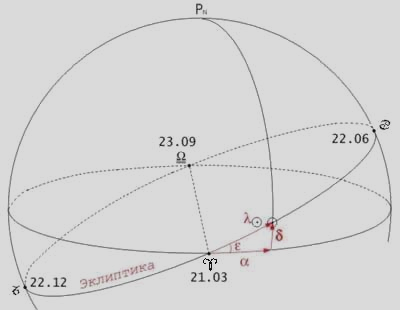
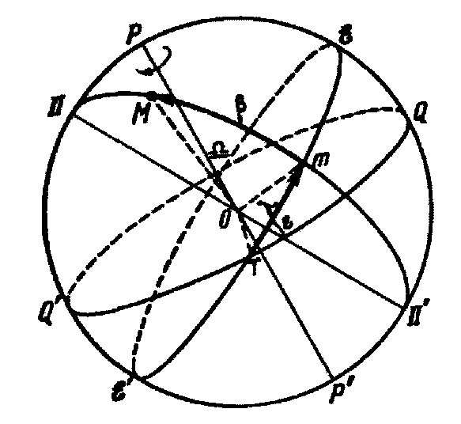
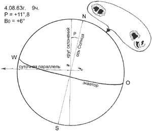
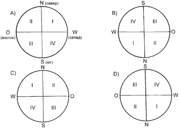
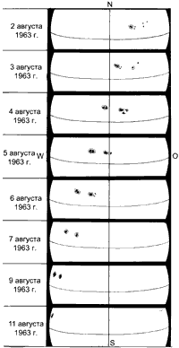
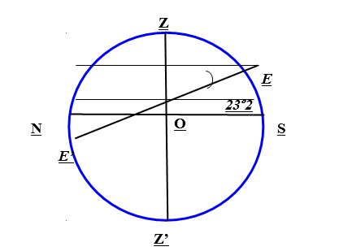

Формирование осознания роли отечественной науки при изучении особенностей видимого годичного движения Солнца по небесной сфере, определение продолжительности дня и ночи на различных широтах.
📚 Краткие теоретические сведения
Видимое перемещение солнечного диска по небесному своду, обусловленное суточным вращением Земли вокруг своей оси и годовым ее вращением вокруг Солнца.
Эклиптика - это видимый годовой путь, по которому перемещается Солнце по небесной сфере. Эклиптика - это проекция плоскости земной орбиты на небесную сферу. Т.к. плоскость небесного экватора - это продолжение земного экватора, а плоскость эклиптики - это плоскость орбиты Земли, то плоскость эклиптики составляет с плоскостью небесного экватора угол ε = 23 °26'. Вследствие годового вращения Земли солнечный диск в течение года перемещается по эклиптике относительно неподвижных звезд, а вследствие наклона эклиптики к небесному экватору Солнце в суточном движении перемещается не по параллели, как все звезды, а по некоторой кривой, имеющей вид спирали. В течение года его склонение меняется в пределах ±23°26'. При этом в дни весеннего и осеннего равноденствий Солнце находится на небесном экваторе, и точки его восхода и захода совпадают с точками востока и запада на горизонте места. От весеннего равноденствия до летнего солнцестояния точка восхода перемещается к северо-востоку, а точка захода — к северо-западу. От летнего солнцестояния до осеннего равноденствия это движение совершается в обратном направлении. После осеннего равноденствия точки восхода и захода перемещаются к юго-востоку и юго-западу, до дня зимнего солнцестояния. Затем вновь начинается их смещение к северу.
Точкой Овна (♈) называется точка на небесной сфере, в которой Солнце в своём видимом годовом движении меняет своё склонение с южного на северное. В эту точку Солнце ежегодно приходит 21-го марта - в день весеннего равноденствия.

Поскольку склонение Солнца изменяется, его суточная параллель меняет свое расположение относительно небесного экватора: она совпадает с ним в дни равноденствий, располагается выше экватора от 21 марта до 23 сентября и ниже – от 23 сентября до 21 марта.
Высота Солнца над горизонтом в моменты кульминаций в различные дни года различна и зависит от широты места наблюдения.
Когда Солнце находится в точке весеннего равноденствия, то оно на всех географических широтах земной поверхности восходит в точке востока Е и заходит в точке запад W. Половина его суточного пути находится над горизонтом, половина – под горизонтом. Следовательно, на всем земном шаре, кроме полюсов, в этот день продолжительность дня равна продолжительности ночи. Этот день называется днем весеннего равноденствия (в день осеннего равноденствия продолжительность дня также равна продолжительности ночи).

Когда Солнце находится в точке летнего солнцестояния ε, то оно восходит на данной широте φ на северо-востоке, а заходит на северо-западе. Большая часть его суточного пути для наблюдателей северного полушария находится над горизонтом. Продолжительность дня в северном полушарии Земли максимальна, ночи – минимальна, в южном – наоборот. Этот день называется днем летнего солнцестояния (22 июня). В день летнего солнцестояния полуденная высота Солнца на данной северной широте φ достигает максимального значения:
hmax = 90º – φ + 23º26’ (1)
Когда Солнце находится в точке зимнего солнцестояния, то оно восходит на юго-востоке, а заходит на юго-западе. Большая часть его суточного пути находится под горизонтом. На данной северной географической широте φ продолжительность дня минимальна, ночи – максимальна (в южных широтах наоборот). Этот день называется днем зимнего солнцестояния (22 декабря).
Высота Солнца в день зимнего солнцестояния на данной северной широте φ достигает минимального значения:
hmin = 90º – φ – 23º26’ (2)
📝 ЗАДАНИЯ И ИНСТРУКЦИИ ПО ВЫПОЛНЕНИЮ
ЗАДАНИЕ 1 Исследование изменения положения пятен вследствие вращения Солнца
Спроектировать изображение Солнца на белый экран с вычерченным на нем кругом диаметром в 10 см.
Для удержания изображения в границах нарисованной окружности телескоп надо все время перемещать за Солнцем. Поэтому, если он имеет экваториальный штатив, то его надо предварительно установить, чтобы во время наблюдений телескоп перемещать только вокруг одной полярной оси.
Остро отточенным карандашом нанести положение пятен.
При неподвижном телескопе проследить за направлением движения какого-либо пятна, отмечая последовательно его положение на круге точками. Проведенная затем через эти точки прямая и будет представлять направление суточной параллели.
Если телескоп имеет светофильтр для прямого рассматривания Солнца, то следует провести прямые наблюдения пятен и более точно зарисовать их структуру и взаимное положение (пример такой зарисовки дан на рисунке 1).

Рисунок 1 - Пример зарисовки солнечных пятен. Справа вверху показана структура и взаимное расположение пятен при прямом наблюдении в окуляр телескопа.
На рисунок нанести ось вращения и экватор Солнца. Для этого необходимо:
Провести перпендикуляр через центр круга к направлению суточной параллели и получить круг склонений;
разметить расположение стран света, пользуясь рисунком 2;

Рисунок 2 - Расположение стран света при наблюдениях Солнца: A) без трубы, в бинокль или в трубу при земном окуляре; B) в телескоп с астрономическим окуляром (дающим обратное изображение); C) на экране при астрономическом окуляре; D) на экране при земном окуляре.
выписать из Астрономического календаря-ежегодника ВАГО ("Физические координаты Солнца"), значение позиционного угла Р проекции солнечной оси и гелиографической широты центра диска Во;
нанести положение солнечной оси, пользуясь значением позиционного угла (при положительных значениях указанный угол откладывается от северного конца круга склонений к востоку, при отрицательных значениях - к западу)
выбрать в соответствии с Во орфографическую сетку, совместить ее центральный меридиан с проведенной осью Солнца и с сетки на чертеж перенести положение солнечного экватора. Пользуясь соткой, определить, на какой широте находятся пятна.
Примечание: так как каждая сетка предназначена для двух значений Вo , отличающихся только знаками, то важно не перепутать при наложении сеток их ориентировку. Вверху должна быть та надпись на сетке, которая соответствует найденному значению Вo .
Провести несколько смежных наблюдений (5-6) в течение двух-трех недель. Результаты после обработки расположить один под другим, чтобы наглядно представить вращение Солнца вокруг своей оси (рис. 3).

Рисунок 3 - Изменение положения пятен вследствие вращения Солнца (наблюдения на экране)
ЗАДАНИЕ 2 Заполните таблицу
Дата
Название
Точка
α₀
δ₀
21 марта
День весеннего равноденствия
♈
22 июня
День летнего солнцестояния
♋
23 сентября
День осеннего равноденствия
♎
22 декабря
День зимнего солнцестояния
♑
ЗАДАНИЕ 3 Определить высоту Солнца над горизонтом в полдень и в полночь в дни равноденствий и солнцестояний в местах наблюдения с широтой:
φ = 90º (северный полюс мира);
φ = 66º34’ (северный полярный круг);
φ = 0º (экватор);
φ = 23º26’ (северный тропик).
Построить для каждого случая небесную сферу с указанными основными линиями и координатами. Указать особенности продолжительности дня и ночи на указанных широтах. Например, для случая 1. небесная сфера будет выглядеть так:

Здесь высота Солнца над горизонтом совпадает с его склонением δ (h = δ). Тогда в период с 21 марта по 23 сентября h = δ > 0. Т.е. в этот период Солнце не заходит за горизонт. Наблюдается полярный день, который длится полгода. В день летнего солнцестояния высота Солнца над горизонтом достигает максимального значения hmax = hmin = 23º26’ (см. формулу 1)
В дни равноденствий hmax= hmin = 0º, т.к. δ = 0. Солнце лежит на горизонте.
В период с 23 сентября по 21 марта h = δ < 0. Т.е. в этот период Солнце не восходит выше горизонта. Наблюдается полярная ночь, которая также длиться полгода. В день зимнего солнцестояния высота Солнца над горизонтом минимальна hmin = hmax = –23º26’ (см. формулу 2). Аналогичная картина будет наблюдаться на Южном полюсе с той лишь разницей, что полярная ночь длиться с 21 марта по 23 сентября, а полярный день – с 23 сентября по 21 марта.
Аналогично описываются ситуации на северном (южном) полярном круге (2.), экваторе (3.) и северном (южном) тропике (4.)
Общий вывод по п. 2–3.: в холодных поясах земного шара (от φ = ±66º34’ до φ = ±90º) Солнце может быть незаходящим и невосходящим светилом. Полярный день и полярная ночь могут длиться от 24 часов (северный или южный полярный круг) до полугода (северный полюс, южный полюс).
Сделать общий вывод по пунктам 4. и 5. (продолжительность дня и ночи в умеренных поясах от φ = ±23º26’ до φ = ±66º34’; и в жарком поясе от φ = +23º26’ до φ = –23º26’).
ЗАДАНИЕ 4. Определить высоту Солнца над горизонтом в полдень 1 декабря и 1 июня на широте Иркутска (φ = 52,17°; λ = 104,18°), используя программу StarCals 5.73. Определить точное время верхней кульминации Солнца над горизонтом.
Используйте инструмент «Текущее время» программы StarCals для задания точной даты и времени. Найдите Солнце на звездной карте. Щелчком правой мыши на кружочке Солнца выберите пункт «Информация» – «Солнце». Узнав склонение Солнца на данный день, найдите его высоту над горизонтом по формуле (1). Точное время кульминации Солнца, его восхода и захода также приводятся в справке «Информация».
ЗАДАНИЕ 5. Определить продолжительность дня и ночи 22 декабря и 22 июня в городе Ульяновске, используя программу StarCals 5.73.